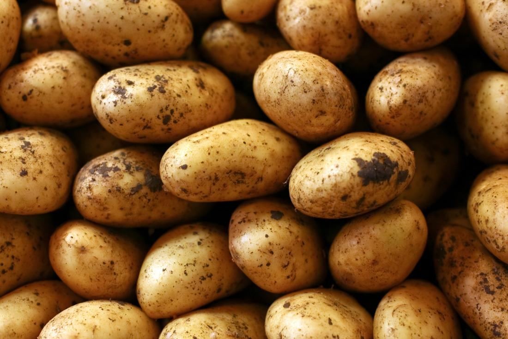

Potato is a starchy root vegetable that belongs to the Solanaceae family, which also includes tomatoes, eggplants, and peppers. It is one of the most widely cultivated crops in the world, with over 4,000 varieties grown across different regions. Potatoes are native to South America, where they were first domesticated over 7,000 years ago. Today, they are an important food staple in many parts of the world, particularly in Europe and North America.
The potato plant is herbaceous and grows to about 2-4 feet in height. The leaves are large and green with a texture similar to that of coarse paper. The flowers of the plant are usually purple, pink, or white, and the fruit is a small, green, and poisonous berry. The edible part of the potato is the tuber, which is the swollen underground stem of the plant. Potatoes come in a variety of shapes, sizes, and colors, ranging from small, round, and red to large, oval, and brown.
Potatoes are a versatile and popular ingredient in many cuisines worldwide. They can be boiled, baked, fried, roasted, mashed, or turned into chips, crisps, or wedges. They are often used as a base for soups, stews, and casseroles, or as a side dish to meat, poultry, or fish. Potatoes are also used to make a variety of processed foods, such as French fries, hash browns, and instant mashed potatoes.
In terms of nutrition, potatoes are a good source of several essential vitamins and minerals. They are particularly high in vitamin C, which is important for immune function and skin health, as well as potassium, which is necessary for maintaining normal blood pressure and fluid balance in the body. Potatoes also provide dietary fiber, which helps to promote digestive health and reduce the risk of chronic diseases such as heart disease, diabetes, and some cancers. However, it is important to note that potatoes are relatively high in carbohydrates and calories, so they should be consumed in moderation as part of a balanced diet.
Potatoes are an excellent source of vitamin C, which is important for immune function and skin health. One medium-sized potato (about 150 grams) provides about 27% of the daily recommended intake of vitamin C.
Potatoes are a good source of potassium, which is necessary for maintaining normal blood pressure and fluid balance in the body. One medium-sized potato provides about 15% of the daily recommended intake of potassium.
Potatoes are a good source of dietary fiber, which helps to promote digestive health and reduce the risk of chronic diseases such as heart disease, diabetes, and some cancers. One medium-sized potato with the skin provides about 2 grams of fiber.
Potatoes are a good source of vitamin B6, which is important for brain function and the production of neurotransmitters. One medium-sized potato provides about 10% of the daily recommended intake of vitamin B6.
Potatoes contain a small amount of iron, which is important for the production of red blood cells and oxygen transport in the body. One medium-sized potato provides about 6% of the daily recommended intake of iron.
Potatoes are a good source of magnesium, which is important for muscle and nerve function, as well as bone health. One medium-sized potato provides about 6% of the daily recommended intake of magnesium.
Overall, potatoes are a nutritious food that can help support overall health and well-being. They are low in fat and calories, and are a good source of several important vitamins and minerals.
| Nutrient | Amount per serving |
|---|---|
| Calories | 161g |
| Total fat | 0.1g |
| Cholesterol | 0mg |
| Sodium | 6mg |
| Total carbohydrates | 17g |
| Dietary fiber | 2.2g |
| Sugars | 0.8g |
| Protein | 2g |
Potatoes are a widely cultivated crop that grow in a range of climates and soil types. They are typically grown from seed potatoes, which are small whole potatoes or pieces of potato that are planted in the soil. The potato plant grows from the seed potato and produces tubers, which are the edible part of the plant.
Potatoes can be grown in a variety of soil types, but they prefer well-draining soil that is rich in organic matter. They require regular watering and can be susceptible to disease and pests, so proper care and management is important to ensure a successful harvest.
Potatoes are typically planted in the spring and harvested in the fall, although the exact timing of planting and harvesting can vary depending on the climate and growing conditions. They can be grown in large commercial farms or in small backyard gardens.
One important consideration in potato cultivation is crop rotation, which is the practice of planting different crops in the same field in different years. This helps to prevent soil-borne diseases and pests from building up in the soil, which can reduce yields and quality. Crop rotation can also help to maintain soil fertility and promote healthy plant growth.
Overall, potato cultivation is an important industry that provides a nutritious and versatile crop for consumption around the world. Careful management and cultivation practices can help to ensure a successful harvest and support sustainable agriculture practices.
